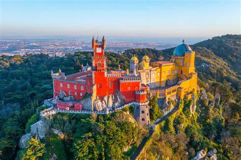
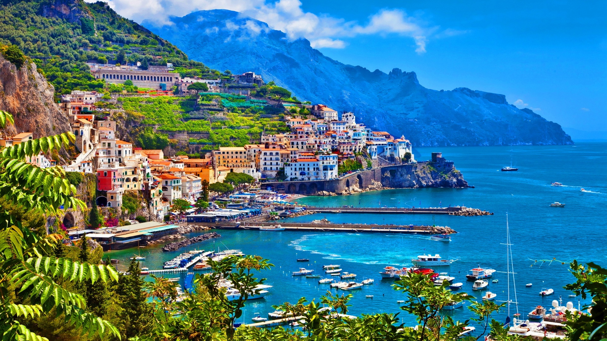
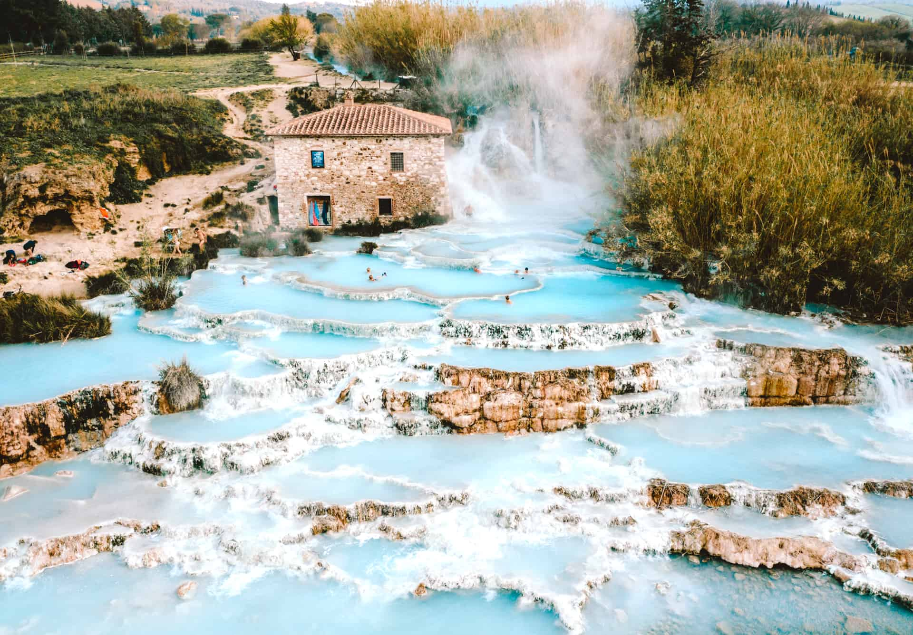

Sintra, Portugal
Sintra is a picturesque resort town located just 30 minutes outside of Lisbon. It is known for its
lush, verdant landscapes and stunning palaces, including the Moorish-style Sintra National Palace
and the colorful, Romantic-era Pena National Palace. The town's fairytale-like atmosphere, with its
winding streets, historic architecture, and surrounding forests, have made it a popular tourist
destination. Visitors can explore the palaces, hike in the Sintra-Cascais Natural Park, and enjoy
the town's charming cafes and shops.
 Chamarel, Mauritius
Situated in Mauritius is another very unique site in geology, spanning five acres under its "Seven
Colored Earths." These are vibrantly undulating dunes in hues of red, brown, violet, green, blue,
and purple. This striking phenomenon was created by the weathering of volcanic rock, resulting in
these distinct layers of color. Other than the Colored Earths, there is the Chamarel Waterfall,
which is one of the highest on the island. It has a flourishing space of nature with views and
scenes informative of their geological history in surroundings of very beautiful views.
Chamarel, Mauritius
Situated in Mauritius is another very unique site in geology, spanning five acres under its "Seven
Colored Earths." These are vibrantly undulating dunes in hues of red, brown, violet, green, blue,
and purple. This striking phenomenon was created by the weathering of volcanic rock, resulting in
these distinct layers of color. Other than the Colored Earths, there is the Chamarel Waterfall,
which is one of the highest on the island. It has a flourishing space of nature with views and
scenes informative of their geological history in surroundings of very beautiful views.

Amalfi Coast, Italy
The Amalfi Coast is a beautiful stretch of Italian coastline in the south, known for its beautiful
towns overlooking the sea, stunning views over the deep blue sea, and its extensive cultural
history. Colorful towns like Positano and Sorrento, and the magnificent city of Naples, have
fairytale cliffside architecture tinted with bright colors, winding streets, and a general laid-back
atmosphere that betrays the Mediterranean way of life. Activities that visitors can experience
include hiking along the Sentiero degli Dei, literally the Path of the Gods, boat rides along its
coast, and indulgence in its cuisine, which abounds with fresh seafood and the ever-famous
Limoncello liqueur.
.jpeg) Tu Le Valley, Vietnam
The Tu Le Valley in northernmost Vietnam gives the finest views of spectacular terraced rice
paddies. During seasonal changes, the mosaic of golden and green fields amidst ferociously rugged
mountain ranges is absolutely mesmerizing. While a visit to this valley could be carried out by
hiking or just a scenic drive, the exploration of rural and agricultural life with its grand vistas
completely catches visitors.
Tu Le Valley, Vietnam
The Tu Le Valley in northernmost Vietnam gives the finest views of spectacular terraced rice
paddies. During seasonal changes, the mosaic of golden and green fields amidst ferociously rugged
mountain ranges is absolutely mesmerizing. While a visit to this valley could be carried out by
hiking or just a scenic drive, the exploration of rural and agricultural life with its grand vistas
completely catches visitors.
.jpeg) Petra, Jordan
Located between Amman and Aqaba, Petra, the "Rose City" of Jordan, is an ancient archaeological site
carved into rose-colored rock. It has been listed on the UNESCO World Heritage site as well as one
of the New Seven Wonders of the World. Petra is famous for its intricate, Hellenistic-style
architecture, such as the iconic Treasury building. Guests visit this city—full of chances for
wandering through the remains of this great city, hiking in striking desert scenery, and learning
about the history and culture of the Nabataean people who constructed this amazing site.
Petra, Jordan
Located between Amman and Aqaba, Petra, the "Rose City" of Jordan, is an ancient archaeological site
carved into rose-colored rock. It has been listed on the UNESCO World Heritage site as well as one
of the New Seven Wonders of the World. Petra is famous for its intricate, Hellenistic-style
architecture, such as the iconic Treasury building. Guests visit this city—full of chances for
wandering through the remains of this great city, hiking in striking desert scenery, and learning
about the history and culture of the Nabataean people who constructed this amazing site.

Saturnia, Italy
Saturnia is a small country village in Tuscany, known for its natural hot springs. The aquamarine
thermal pools, supplied with sulfurous springs, are set against the picturesque backdrop of rolling
hills and forests to create an atmosphere of tranquility and serenity. These baths are believed to
be therapeutic, since their water contains minerals that can have medicinal effects on the skin and
the body. Visitors can relax and lounge about in the pools, which are all at a constant temperature
of about 99°F (37°C), set amidst the peace of a rural atmosphere. The town itself is very
picturesque, with medieval architecture, curving streets, and a very relaxed pace of life. Saturnia
is an excellent destination for those who want a little peace from the rush of everyday life, and
the added advantage here is healing power that's natural.
.jpeg) Palm Springs, California
Situated in the Sonoran Desert of southern California is the palm oasis of Palm Springs. The city
features the Santa Rosa and San Jacinto mountain ranges. It manifests above-par, well-preserved
mid-century modern architecture, a vivacious arts scene, and numerous outdoor activities
opportunities. The iconic architecture includes buildings designed by world-renowned architects like
Richard Neutra and Albert Frey. There are several galleries and art museums that a visitor can check
in the city. With Palm Springs, outdoor activities range from mountain hiking to rock climbing,
golfing, and lounging by the pool. Wonderful activities, framed interactive, on the scenic backdrop
of this city—rugby mountains, palm trees, and clear skies. This package offers the best of both
worlds—Palm Springs has it all: desert landscapes, architectural history, and modern amenities
making it so popular for people looking to stay without a fuss in style.
Palm Springs, California
Situated in the Sonoran Desert of southern California is the palm oasis of Palm Springs. The city
features the Santa Rosa and San Jacinto mountain ranges. It manifests above-par, well-preserved
mid-century modern architecture, a vivacious arts scene, and numerous outdoor activities
opportunities. The iconic architecture includes buildings designed by world-renowned architects like
Richard Neutra and Albert Frey. There are several galleries and art museums that a visitor can check
in the city. With Palm Springs, outdoor activities range from mountain hiking to rock climbing,
golfing, and lounging by the pool. Wonderful activities, framed interactive, on the scenic backdrop
of this city—rugby mountains, palm trees, and clear skies. This package offers the best of both
worlds—Palm Springs has it all: desert landscapes, architectural history, and modern amenities
making it so popular for people looking to stay without a fuss in style.